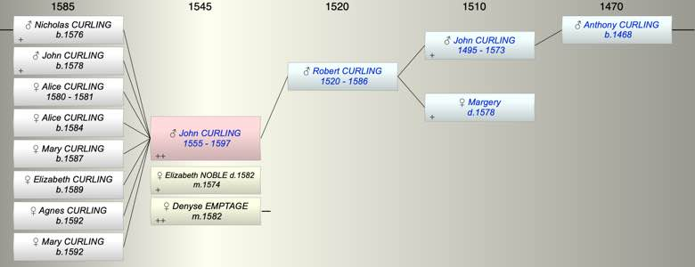

| [Index] |
| John CURLING (1555 - 1597) |
|  |
| b. abt 1555 |
| m. (1) 30 Nov 1574 Elizabeth NOBLE ( - 1582) at St Laurence |
| m. (2) 08 Mar 1582 Denyse EMPTAGE at St Laurence |
| d. 1597 aged 42 |
| Parents: |
| Robert CURLING (1520 - 1586) |
| Children (8): |
| Nicholas CURLING (1576 - ) |
| John CURLING (1578 - ) |
| Alice CURLING (1580 - 1581) |
| Alice CURLING (1584 - ) |
| Mary CURLING (1587 - ) |
| Elizabeth CURLING (1589 - ) |
| Agnes CURLING (1592 - ) |
| Mary CURLING (1592 - ) |
| Grandchildren (5): |
| Mary CURLING (1610 - ), John CURLING (1613 - ), Elizabeth CURLING (1615 - ), Nicholas CURLING (1618 - ), Margaret CURLING (1621 - ) |
| Events in John CURLING (1555 - 1597)'s life | |||||
| Date | Age | Event | Place | Notes | Src |
| abt 1555 | John CURLING was born | ||||
| 30 Nov 1574 | 19 | Married Elizabeth NOBLE | St Laurence | Note 1 | |
| 1576 | 21 | Birth of son Nicholas CURLING | Note 2 | ||
| 1578 | 23 | Birth of son John CURLING | Note 3 | ||
| 1580 | 25 | Birth of daughter Alice CURLING | Note 4 | ||
| 1581 | 26 | Death of daughter Alice CURLING (aged 1) | Note 5 | ||
| 1582 | 27 | Death of wife Elizabeth NOBLE | Note 6 | ||
| 08 Mar 1582 | 27 | Married Denyse EMPTAGE | St Laurence | Note 7 | |
| 1584 | 29 | Birth of daughter Alice CURLING | Note 8 | ||
| 1586 | 31 | Death of father Robert CURLING (aged 66) | Note 9 | ||
| 1587 | 32 | Birth of daughter Mary CURLING | Note 10 | ||
| 1589 | 34 | Birth of daughter Elizabeth CURLING | Note 11 | ||
| 1592 | 37 | Birth of daughter Agnes CURLING | Note 12 | ||
| 1592 | 37 | Birth of daughter Mary CURLING | Note 13 | ||
| 1597 | 42 | John CURLING died | Note 14 | ||
| Personal Notes: |
|
John Curlinge of St Lawrence in Thanet will 597 1597 PRC17/51/108b PRC16/109 C/7
He refers to his: wife Dennis four daughters: Alice Curlinge Marie Curlinge Elizabeth Curlinge and Agnes Curling, single and under 20. These fit with Dennis as the mother two sons Nicholas (not yet 25) and John suggest an earlier marriage brother Roger no burials to explain infant mortalities. |
| Created on a Mac™ using iFamily for Mac™ on 8 Oct 2023 |